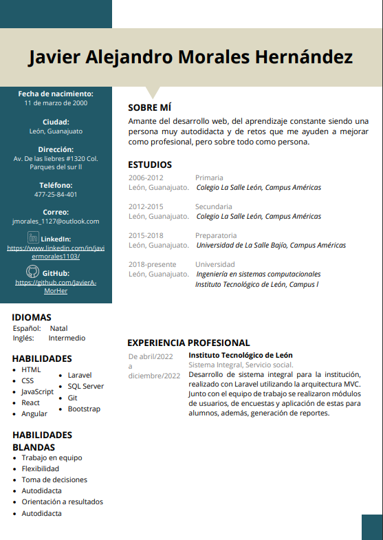

<div class="container">
    
    
    <div class="biografia animate__animated animate__fadeIn">
        <h2 class="titulo">About me</h2>

        <div class="info">

            <div class="img">
                <div class="div-arco">
                    
                    <span>Arco de la Calzada, León, Guanajuato</span>
                </div>

                <div class="column">
                    
                    <a href="../../../../assets/CV Javier.pdf" target="_blank"
                       download="cvJavier.pdf">Haz click aqui para descargar mi CV</a>
                </div>
            </div>


            <div class="text">
                <p>
                    I am Javier Alejandro Morales Hernández, I am 22 years old 
                    and I was born in León, Guanajuato, <span class="me">Mé</span>xi<span class="co">co</span> .

                    I am currently studying Computer Systems Engineering at 
                    the Technological Institute of León.
                    <br>
                    <br>

                    Since 2021 I have dedicated myself to complementing my university formation
                    and started to learn about web development, starting with HTML, CSS, and Javascript.
                    <br><br>

                    When I felt the bases were already strong y decided to learn about 
                    React and then I realize I like frontend development so much so to 
                    complement my knowledge I learn about UX/IU design.
                    <br><br>
                    I recently discovered angular, this famous framework from Google and I love it! ( this portfolio 
                    is made with Angular :D ), and although I do not consider myself an expert in all the technologies that I have learned, I feel that I have learned a lot 


                </p>
    
                <h2 class="autoAprendizaje">Self-learning</h2>
                <p>
                    For me, self-learning is a <span class="highlight"> very important </span>  quality.
                    <br><br>
                    In my school, they don't teach the technology that I mentioned before,
                    that is the reason I decided to learn by myself, purchasing online courses and 
                    watching a lot of Youtube turorials.
                </p>
            </div>

        </div>

        <div class="certificados">
            <h2 class="tituloCertificados">My certificates</h2>
            <p>
                In this section, you can find the certificates of the courses I have taken.
            </p>

            <div class="wrap">
                
            </div>
        </div>


    </div>


</div>
